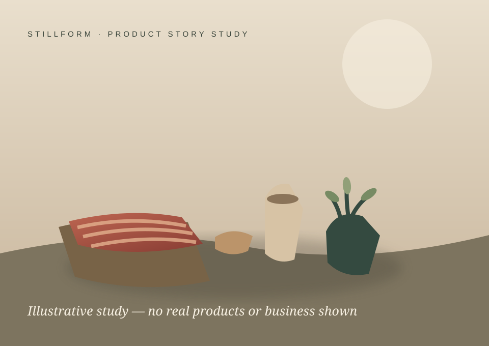

Start with what it’s made of.
Give material, texture and process the same care as the finished object. Keep the story personal and specific.
DIRECTION STUDYHANDCRAFTED · FASHION · BOUTIQUES
A product story with room to breathe—and a phone workflow to keep the first conversation clear.
Fictional product study · no actual shop or item shown
Explore the phone view
STILLFORM · PRODUCT STORY STUDYA visual concept for presenting materials, process and the person behind a piece. The fictional inquiry below is a practice example; it does not represent inventory, an order, or a real customer.
Give material, texture and process the same care as the finished object. Keep the story personal and specific.
DIRECTION STUDYA quieter layout for a small collection, a signature detail and the question someone is ready to ask.
DIRECTION STUDYTHE PHONE OWNER VIEW
Practice opening a request, preparing a reply and keeping the next step visible.
Helpful points to clarify
Which color did they have in mind? Are they asking about an existing piece or a new request? Confirm actual options, timing and any price directly before promising a change. This example confirms no stock, price, delivery date or custom order.
A little detail goes a long way.
Tell us which piece caught your eye and what you would like to know. We will review the details before confirming options.